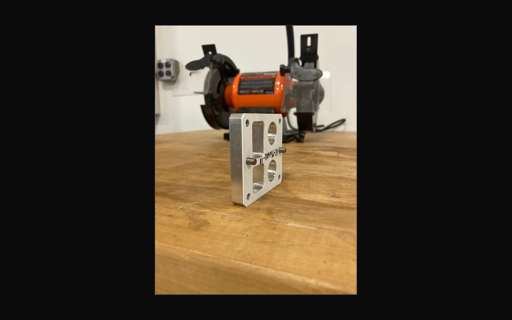
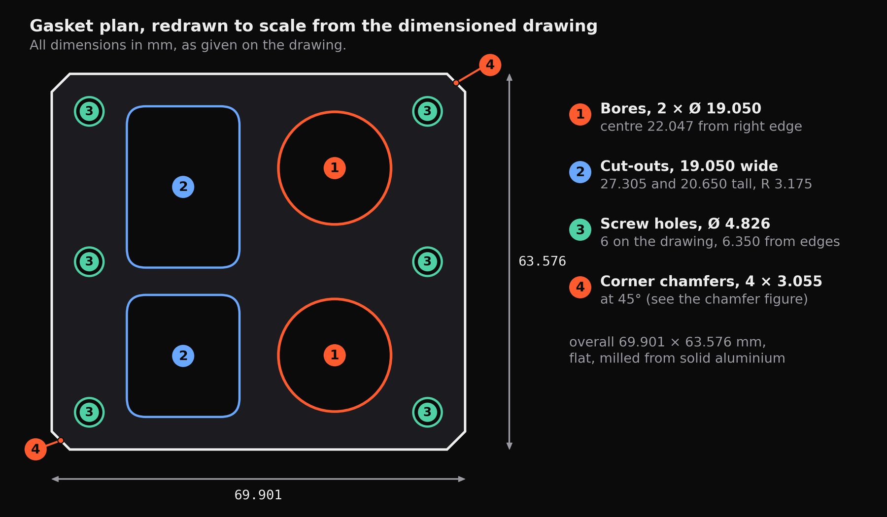
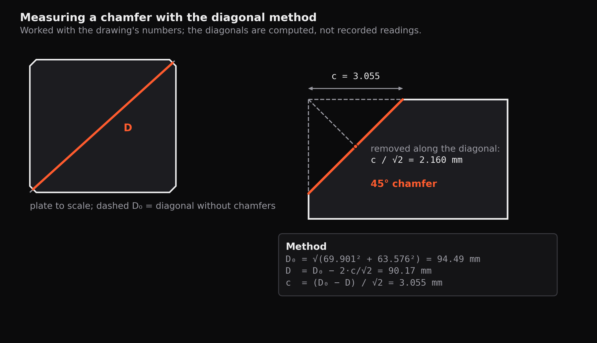
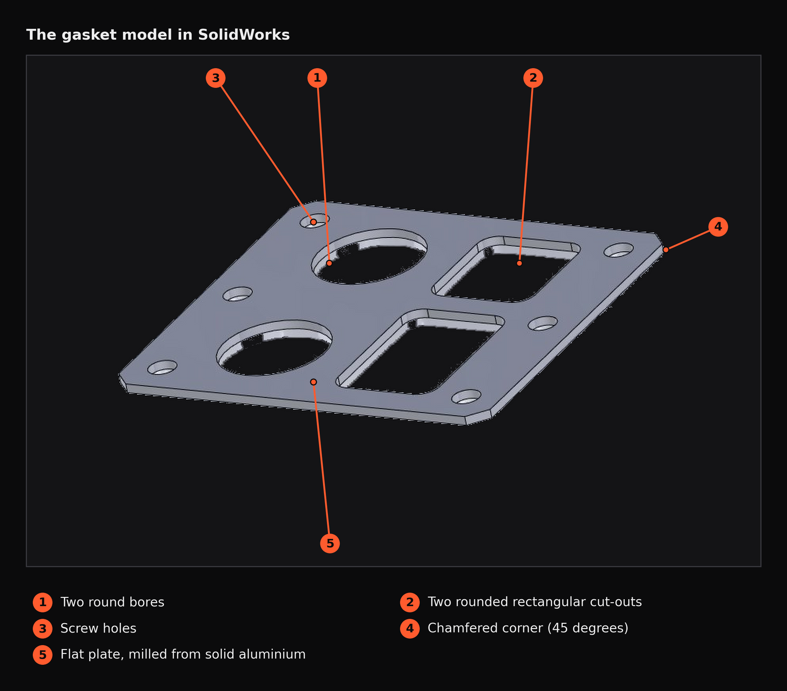
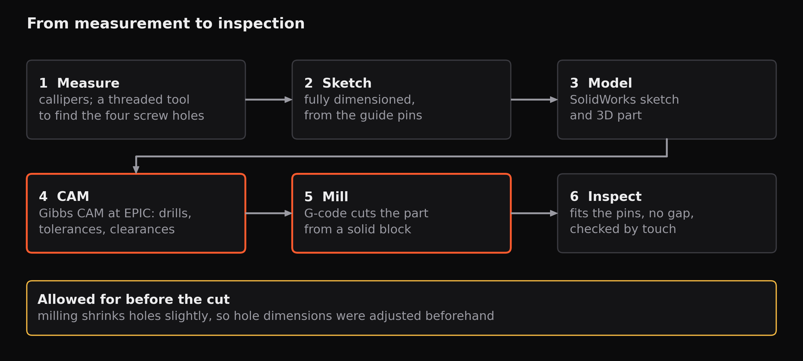
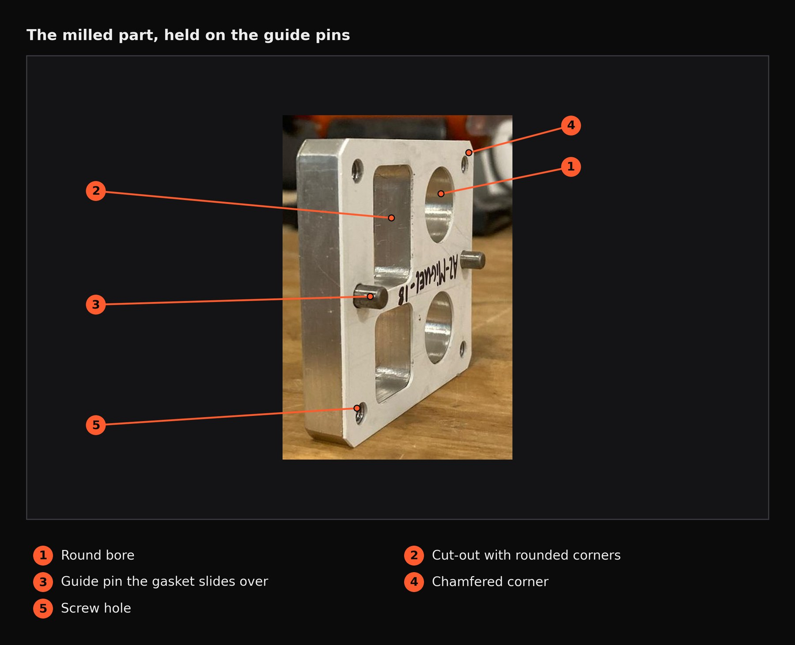

Hardware · Sep 2022 · Built and tested
Milled gasket
Measure an aluminium block, model a seal that fits it, and mill it from solid.

- 4screw holes located from the guide pins
- 1reference for every dimension: the guide pins
- 0visible air gaps at the interface
- 1part milled from solid, with hole sizes adjusted for milling
A gasket for a pre-existing aluminium block with guide pins, measured by hand, modelled in SolidWorks, programmed in Gibbs CAM and milled. The point of the assignment was accuracy: using the equipment correctly, and turning measurements into a fully dimensioned part.
01The brief
Make a gasket for an existing aluminium block that has features and guide pins, dimensioned so it forms a flush seal. The learning goals were to use measuring equipment accurately and precisely, to read a part's measurements with a calliper, and to carry them through CAD and CAM to a milled part.
02Getting the numbers
A calliper did most of the work. Chamfers were found with a diagonal method: measure the diagonal, subtract the diagonal the block would have without a chamfer (from its height and width), and use Pythagoras to turn the difference into a chamfer depth. The screw holes were located with a special tool, a solid cylindrical top with a thread inserted, which gave the distance from the centre of a guide pin to each hole. A radius was subtracted from each feature to get true centre-to-centre distances. The guide pins became the reference for everything, because the part has to slot onto them.




03CAD, CAM and the mill
The fully dimensioned sketch was rebuilt in SolidWorks, starting with the guide pins and then the cut-out widths, heights and circle diameters. At EPIC, Boston University's Engineering Product Innovation Center, a guide covered setting up the part in Gibbs CAM, where I chose drill bits and checked tolerances and clearance heights. The CAD file became G-code, which went to the mill to cut the part from a solid block. Milled holes tend to come out slightly undersize, so the hole dimensions were adjusted beforehand to avoid problems at the test.




04Result
The gasket slid over the guide pins without warping, which shows the pins were positioned correctly, and left no visible air gap at the interface. The instructor checked for overhangs and discrepancies by running a finger along the inner edges, and approved it.

